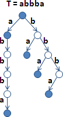
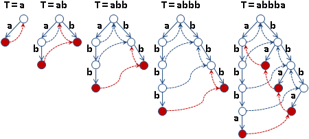
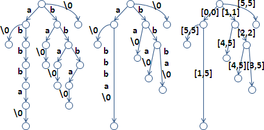
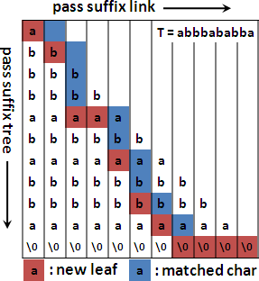

String Matching
程度★ 難度★★
運用後綴處理字串匹配問題
一個字串的每個後綴的開頭，正是字串匹配時，P的每個對齊位置。儘管後綴是指字串的後端，然而後綴用於字串匹配時，思想上是連結到後綴的前端。
T: mississippi P: issi all suffixes of T: mississippi, ississippi, ssissippi, ... string matching: 0 1 2 mississippi ississippi ssissippi ... issi issi issi
以後綴為觀點，便產生了一種字串匹配的手法：第一步、先列出T的全部後綴，第二步、尋找哪些後綴的前綴恰是P。
選擇一個適當的資料結構，儲存T的全部後綴，並且預先排序T的全部後綴，如此尋找P的速度就會更快。
儲存大量後綴的資料結構
事實上，任何一種儲存大量字串的資料結構，都可用來儲存T的全部後綴，例如二維陣列、Trie、Ternary Tree、甚至是C++ STL提供的set資料結構。
由於後綴具有一些特性，因此資料結構的大小是可以改進的，排序全部後綴的速度是可以改進的。當今已有數種資料結構，能以O(T)的時間，儲存並且排序全部後綴；能以接近O(P)的時間，進行字串匹配。
build string matching
---------------------------------------
suffix array O(T) O(PlogT)
+ lcp array O(T) O(P + logT)
suffix trie O(T^2) O(P)
suffix tree O(T) O(P)
運用後綴處理其他問題
一個字串的全部後綴，除了能夠處理字串匹配問題，另外也能夠處理比對連續字元的問題。
Longest Common Prefix of Suffixes Longest Common Extension Longest Common Substring Longest Repeated Substring
無論採用哪一種資料結構來儲存後綴，都能處理這些問題。
大量Suffix資料結構: Suffix Array
程度★ 難度★★★
Suffix Array
一個字串的全部後綴，統統放入陣列，方便管理。然後排序所有後綴，以利之後搜尋，就成了「後綴陣列」。
string:
mississippi
all suffixes:
mississippi, ississippi, ssissippi, sissippi, issippi,
ssippi, sippi, ippi, ppi, pi, i
suffix array:
+---+------+---------+------------+-------------+- -+
| i | ippi | issippi | ississippi | mississippi | ... |
+---+------+---------+------------+-------------+- -+
suffix array:
+---------+--------+--------+--------+- -+
| [10,10] | [7,10] | [4,10] | [1,10] | ... |
+---------+--------+--------+--------+- -+
suffix array:
+----+---+---+---+---+---+---+---+---+---+---+
| 10 | 7 | 4 | 1 | 0 | 9 | 8 | 6 | 3 | 5 | 2 |
+----+---+---+---+---+---+---+---+---+---+---+
horizational presentation of suffix array:
| sa | suffix
---+----+------------
0 | 10 | i
1 | 7 | ippi
2 | 4 | issippi
3 | 1 | ississippi
4 | 0 | mississippi
5 | 9 | pi
6 | 8 | ppi
7 | 6 | sippi
8 | 3 | sissippi
9 | 5 | ssippi
10 | 2 | ssissippi
vertical presentation of suffix array:
+------------------------+
| 10 7 4 1 0 9 8 6 3 5 2 |
+------------------------+
i i i i m p p s s s s
p s s i i p i i s s
p s s s i p s i i
i i i s p s p s
p s i i i p s
p s s p i i
i i s p p
p i i p
p p i
i p
i
只要有兩個索引值就可以表示一個字串，當然也就可以表示一個後綴。由於各個後綴的結尾索引值都一樣，所以可以省略結尾索引值，僅需記下開頭索引值；採用指標也是可以。如此一來後綴陣列的空間複雜度就成為O(T)。
演算法（Quicksort）
建立後綴陣列有許多不同的演算法，最簡單的方式就是直接排序所有後綴。
排序過程當中，兩兩比較次數是O(TlogT)，比較兩個後綴的大小需時O(T)，故時間複雜度為O(TlogT * T) = O(T^2 * logT)。運用內建函式庫，即可輕鬆實作。
由於每個後綴長度都不同，所以最終名次一定也都不同，毋須特地使用stable sort。
演算法（Radix Sort）
字串的字母種類範圍有限，得以套用Radix Sort，爭取更好的時間複雜度。
時間複雜度為O((T+A) * T)，其中A為字元種類數目。A一般是常數，可省略之，時間複雜度可簡單寫成O(T^2)。
演算法（Prefix-doubling Algorithm）
Radix Sort和Prefix-doubling Algorithm非常相似，皆是反反覆覆排序許多次。兩者的主要差異在於鍵值。
Radix Sort每次排序的鍵值，依序是倒數第一個、倒數第二個、倒數第三個、……字元；Prefix-doubling Algorithm每次排序的鍵值，則是前一個、前二個、前四個、前八個、……字元。
每個後綴開頭，長度為一、二、四、八、……的前綴，依序作為鍵值，實施O(logT)次排序。每次排序，採用Quicksort。並且運用上一回合的排序結果，先比鍵值前半段、才比鍵值後半段。每次排序需時O(TlogT)，總時間複雜度為O(T * (logT)^2)。
排序過程可以看成是：用相鄰的一個字元的排序結果，拼成兩個字元的排序結果；用相鄰的兩個字元的排序結果，拼成四個字元的排序結果；如此不斷下去，直到字元長度大於等於最長的後綴（即是原字串），此時表示最長的後綴也都排序好了。
每次排序，改用Counting Sort，則時間複雜度降為O(TlogT + A)，其中A為字元種類數目。
演算法（DC3 Algorithm）
運用Divide and Conquer以及Radix Sort，把全部後綴分成三類，分別處理。時間複雜度為O(T)，可是不太實用。
一、所有後綴根據開頭位置分成兩堆， 開頭位置模三之後，餘零者為S0，餘一或二者為S12。 二、用radix sort排序S12，僅排序前三個字元。 平手者，才繼續排序下三個字元。 途中可以隨時利用已經排序好的部份。 三、利用排序完畢的S12，來排序S0。 四、合併S12與S0。 時間複雜度為T(n) = O(n) + T(2n/3) = O(N)。
程式碼不太優雅，這裡就不講解了。原始論文有提供程式碼。
字串匹配
由於後綴是放在陣列，而且後綴都排序過了，所以可以使用Binary Search來尋找開頭為P的後綴。時間複雜度為O(PlogT)。
大量字串匹配
所有T連成一串，用字典順序最小、從未出現的字元隔開，例如'\0'。然後計算後綴陣列，後綴排序必然正確。
每個P各自做二分搜尋即可。
UVa 10526 10580
大量Suffix資料結構: Longest Common Prefix Array
程度★★ 難度★★
Longest Common Prefix（LCP）
一群字串的「最長共同前綴」，是指每個字串都有出現的前綴之中，最長的那一個前綴，只會有一個，有可能是空字串。
s1: aabbccc s2: aabbbccc s3: aabaccc s1 s2 s3 的 LCP 就是 aab。
要求「最長共同前綴」很簡單，從字串開頭逐一比對各字串的對應字元即可，應該難不倒各位。
Longest Common Prefix of Suffixes
一個字串的所有後綴，它們之間的「最長共同前綴」。
string:
abbbababba
suffixes:
s0: abbbababba
s1: bbbababba
s2: bbababba
......
s8: ba
s9: a
LCP(s1, s2) = bb
LCP(s0, s9) = a
兩個後綴的LCP，
就是排序全部後綴之後，兩個後綴涵蓋區間的所有後綴的LCP。
全部後綴經過排序之後，開頭相近的後綴，會被排在一起；開頭不相近的後綴，會被開頭相近的後綴隔開。
+---------------------+
sa | 9 4 6 0 8 3 5 7 2 1 |
+---------------------+
0 1 2 3 4 5 6 7 8 9
---------------------
a a a a b b b b b b
b b b a a a b b b
a b b b b a a b
b a b a b b a
b a b a a b
a b b b a
a a b b
b a b
b a
a
LCP(7th, 9th) = LCP(7th, 8th, 9th) = LCP(s7, s2, s1) = bb
LCP(4th, 8th) = LCP(4th, ..., 8th) = LCP(s8, ..., s2) = b
排序全部後綴之後，兩個後綴涵蓋區間的所有後綴的LCP，
就是兩兩相鄰後綴的LCP們的LCP。
LCP(7th, 9th) = LCP( LCP(7th, 8th), LCP(8th, 9th) ) = bb LCP(4th, 8th) = LCP( LCP(4th, 5th), ..., LCP(7th, 8th) ) = b
如此一來，以相鄰後綴的LCP，就可以推導出任意後綴的LCP了。
兩兩相鄰後綴的LCP，表達成數值：
Longest Common Prefix Array
直接紀錄LCP字串會浪費很多記憶體空間，因此改為紀錄LCP長度。LCP長度輔以原本的後綴字串，便可得到LCP字串。
全部後綴經過排序之後，每一個後綴與前（後）一個後綴的LCP長度，儲存在陣列當中，就成為LCP Array。
+---------------------+
sa | 9 4 6 0 8 3 5 7 2 1 |
+---------------------+
lcpa | 0 1 2 3 0 2 3 1 3 2 |
+---------------------+
0 1 2 3 4 5 6 7 8 9
---------------------
a a a a b b b b b b
b b b a a a b b b
a b b b b a a b
b a b a b b a
b a b a a b
a b b b a
a a b b
b a b
b a
a
LCP_length(7th, 9th) = min(lcpa[7+1], ..., lcpa[9]) = 2
LCP_length(4th, 8th) = min(lcpa[4+1], ..., lcpa[8]) = 1
兩個後綴的LCP，藉由LCP Array，就變成查詢區間最小值的問題了。可參考「Range Minimum Query」。
普通的演算法
依序計算兩兩相鄰後綴的LCP，時間複雜度O(N^2)。
巧妙的演算法
運用小技巧，建立LCP Array僅需時O(N)。
一個字串的後綴，開頭去掉一個字元，仍是後綴。
後綴陣列當中，兩個相鄰後綴，開頭各去掉一個字元，得到兩個新後綴，可能相鄰、可能不相鄰，但是大小關係依然相同。
兩個新後綴，LCP少了一個開頭字元、LCP長度少一，小心不能減至負值。
1 2 5 6
---------------------
a a b b
b b a a
a b b b
b a a b
b b a
a b
a
bababba < babba => ababba < abba
LCP(bababba, babba) = b + LCP(ababba, abba)
LCP_length(bababba, babba) = 1 + LCP_length(ababba, abba)
2 3 7 9
---------------------
a a b b
b b b b
b b a b
a b a
a b
b a
a b
b b
b a
a
abba < abbbababba => bba < bbbababba
LCP(abba, abbbababba) = a + LCP(bba, bbbababba)
LCP_length(abba, abbbababba) = 1 + LCP_length(bba, bbbababba)
LCP_length(7th, (7+1)th) ≥ LCP_length(7th, 9th)
LCP_length((9-1)th, 9th) ≥ LCP_length(7th, 9th)
第一個新後綴、其後方相鄰後綴，兩者的LCP長度，比兩個新後綴的LCP長度更長、一樣長。
第二個新後綴、其前方相鄰後綴，兩者的LCP長度，比兩個新後綴的LCP長度更長、一樣長。
逐次去掉後綴的開頭字元，以此順序計算相鄰後綴的LCP。LCP長度減一之後，由於新後綴與其相鄰後綴的LCP長度一定更長、一樣長，所以不必從頭開始比對字元。
一、依序掃描原字串的每個後綴。每次都會少掉一個開頭字元： 甲、求得該後綴在後綴陣列裡的位置。 乙、再找出上一個相鄰後綴。 丙、逐一比對字元，求出LCP長度，儲存於LCP Array。 丁、下次就可以從LCP長度減一開始比對字元。小心不能減至負值。
字串匹配
T的後綴陣列裡面，二分搜尋P。令二分搜尋的三個指標是L M R。一旦L R與P有相同前綴，那麼M與P比大小時，就不用比對這一段相同前綴了。
時間複雜度是O(PlogT)，可以加速到O(P+logT)。然而實際運作起來並無太大差異。
一、計算T的Suffix Array。O(T)。 二、計算T的Longest Common Prefix Array。O(T)。 三、預先算好二分搜尋時所有可能遭遇的區間的LCP(i,j)。O(T)。 回、建立偽線段樹的過程，即可算得。 回、或採< O(T),O(1) > RMQ。很難實作。 四、二分搜尋時，判斷LCP(L,M)、LCP(M,R)，與LCP(L,P)（或LCP(R,P)）的大小關係。 把P與適合的L或R，盡可能增加共同前綴的長度。O(P+logT)。
ICPC 4657
大量Suffix資料結構: Suffix Trie
程度★★ 難度★
普通的建立方法
把一個字串的所有後綴，通通塞入一棵Trie，就成了Suffix Trie。Trie的使用方式以及程式碼，請參考本站文件「Trie」。
T個後綴塞入Trie的時間複雜度為O(T^2)，空間複雜度為O(T^2)。
運用suffix link的建立方法
先前介紹Aho-Corasick Algorithm已經提過suffix link：每個節點各自牽一條線到次長後綴的節點。
運用suffix link，就能online建立Suffix Trie，而且不必重覆遍歷已經建立的節點。每加入一個字元，就從最深的節點開始走訪suffix link、建立新節點。
加入所有字元之後，記得標出每個後綴所在節點。
時間複雜度仍是O(T^2)，空間複雜度仍是O(T^2)。
字串匹配
從T找到一個P：從樹根開始走訪Suffix Trie，看看有沒有P。時間複雜度為O(P)。
從T找到全部P：建立Suffix Trie的時候，每個後綴所經過的節點，都必須額外紀錄該後綴在T之中的出現位置。
大量Suffix資料結構: Suffix Tree
程度★★ 難度★★★
Suffix Tree
Suffix Tree是Suffix Trie的改良版本：
一、字串結尾額外添加一個從未出現的字元（例如'\0'），再來建立Suffix Trie。如此一來，後綴結尾總是出現在樹葉，不會出現在內部節點，就不必特別紀錄後綴所在節點。
二、去除沒有分叉的節點，一連串的樹枝銜接成一根樹枝。
三、兩個索引值就能表示一個子字串。樹枝上的子字串改為兩個索引值、或者兩個指標。
如此成為了「後綴樹」，共T+1個樹葉。字元皆相同時，節點數最多，共2T+1個節點；字元皆不同時，節點數最少，共T+2個節點。空間複雜度是O(T)。
Suffix Tree: Ukkonen's Algorithm
http://www.csie.ntu.edu.tw/~hil/algo2011spring/algo2011spring09.pptx
運用suffix link，是online演算法，時間複雜度為O(T)。
樹葉終身是樹葉。因此每加入一個字元時，不必回到最深的節點開始建立新節點，可以直接從當前節點開始建立新節點。
字串匹配
從T找到一個P：從樹根開始走訪Suffix Tree，看看有沒有P。時間複雜度為O(P)。
Suffix Tree的每一條邊，是T中最先出現的字串。
從T找到全部P：從Suffix Tree找到P之後，遍歷子樹。子樹的葉子數量，就是P在T當中的出現次數。至於P在T當中的位置是 [ T長度 - 葉子深度 , T長度 - 葉子深度 + 當前節點深度 ]。
因為是二元樹，內部節點數量等於葉子數量減一，所以字串匹配的時間複雜度還是線性，只是出現次數的常數變兩倍。
大量Suffix資料結構: Suffix Tray
程度★★ 難度★★
Suffix Tray
Suffix Tree和Suffix Array一併使用。
http://cs.nyu.edu/cole/papers/suffix-trays.pdf
http://courses.csail.mit.edu/6.851/spring07/scribe/lec09.pdf
Longest Common Extension
程度★★ 難度★
Longest Common Extension
兩個字串，第一個字串從第i個字元開始，第二個字串從第j個字元開始，可以匹配到的最長字串，就是Longest Common Extension。
01234567
s1: aabbccc
s2: aabbbccc
LCE(0, 0) = aabb
LCE(2, 2) = bb
LCE(3, 4) = bccc
Longest Common Extension其實就是第一個字串的第i個後綴、第二個字串的第j個後綴，它們的Longest Common Prefix。
演算法（Suffix Array）
把兩個字串的全部後綴，一起排序。如果有大量的i與j需要計算，可以使用Range Minimum Query來查詢LCP Array的區間最小值。
時間複雜度為O(S+T)，S與T分別是兩個字串的長度。
演算法（Suffix Trie、Suffix Tree）
把兩個字串的全部後綴統統丟入Suffix Trie或Suffix Tree當中，從樹根往下逐字比對即可。如果有大量的i與j需要計算，可以改為求兩個後綴結尾節點的Lowest Common Ancestor。
時間複雜度為O(S+T)，S與T分別是兩個字串的長度。
Longest Common Substring
程度★★ 難度★
Longest Common Substring
「最長共同子字串」是指一群字串當中，每一個字串都有的子字串，其長度最長者。可能有許多個。
s1: aabbccc s2: aabbbccc s3: baabaccc s1 s2 s3 的 Longest Common Substring 就是 aab 與 ccc。
演算法（Suffix Array）
把全部字串的全部後綴，標記好是屬於哪一個字串，然後統統排序。排在一起的後綴們，如果涵蓋了每一種字串的後綴，那麼這些後綴的共同前綴，就是一個共同子字串。所有的共同子字串當中，找出最長者，即為最長共同子字串。
實作時可以用兩個指標，一前一後輪流移動，讓兩個指標所夾住之區間，持有每一種字串的後綴，以找出共同子字串。
實作時可以把字串銜接成一整串，並在字串之間插入從未出現過的字元，就能直接套用後綴陣列的演算法。然而重新銜接字串會花費不少時間和空間，因此也可以嘗試修改後綴陣列的演算法，避免重新銜接字串。
時間複雜度是O(N)，N是所有字串長度的總和。
【待補程式碼】
以下暫且提供未使用LCP Array的程式碼。
UVa 11107 11512 11855
Longest Repeated Substring
程度★★ 難度★
Longest Repeated Substring
「最長重覆子字串」是指出現兩次以上的子字串當中，其長度最長者。可能有許多個。
子字串重複出現有兩種定義，一種是位置可以重疊，另一種是位置不能重疊。
s: ababababa 可以重疊的 Longest Repeated Substring 就是 abababa。 不可以重疊的 Longest Repeated Substring 就是 abab 與 baba。
可以重疊的Longest Repeated Substring
LCP Array的最大值就是答案。各位用力想吧！時間複雜度為O(N)。
ICPC 4513
不可以重疊的Longest Repeated Substring
試誤法，以Binary Search找出最長重複子字串的長度。
看看後綴陣列是否有一段連續區間的LCP長度，恰好是最長重複子字串的長度，並且區間要足夠寬，讓子字串不重疊。
時間複雜度為O(NlogN)。
UVa 10829
延伸閱讀：Karp-Miller-Rosenberg Algrotihm
KMR Algorithm可以用來統計每個子字串的出現次數、出現位置。
KMR Algorithm其實就是Prefix-Doubling Algorithm。依序排序長度為一、二、四、八、……的子字串，把每次排序的名次統統紀錄下來。然後利用名次，統計長度為一、二、四、八、……的子字串的出現次數、出現位置。整體的時間複雜度仍是O(NlogN)。
length = 1 length = 2
| 0 1 2 3 4 5 6 7 | 0 1 2 3 4 5 6 7
s | a b a a b b a a s | a b a a b b a a
rank | 0 1 0 0 1 1 0 0 rank | 1 3 0 1 4 3 0 2
repeat | 5 3 5 5 3 3 5 5 repeat | 2 2 2 2 2 2 2 1
a | 0 2 3 6 7 aa | 2 6
b | 1 4 5 ab | 0 3
ba | 1 5
bb | 4
a | 7
要尋找長度不是一、二、四、八、……的子字串出現位置，一樣也是使用排序，找出名次，再統計出現位置。排序時，利用長度最接近、略短於目前長度的子字串排序結果，一樣也是先比前半段，再比後半段，前後兩段會重疊。時間複雜度也是O(N)。這個手法在Range Minimum Query也可以見到。
至於找Longest Common Substring，方法同上個小節。